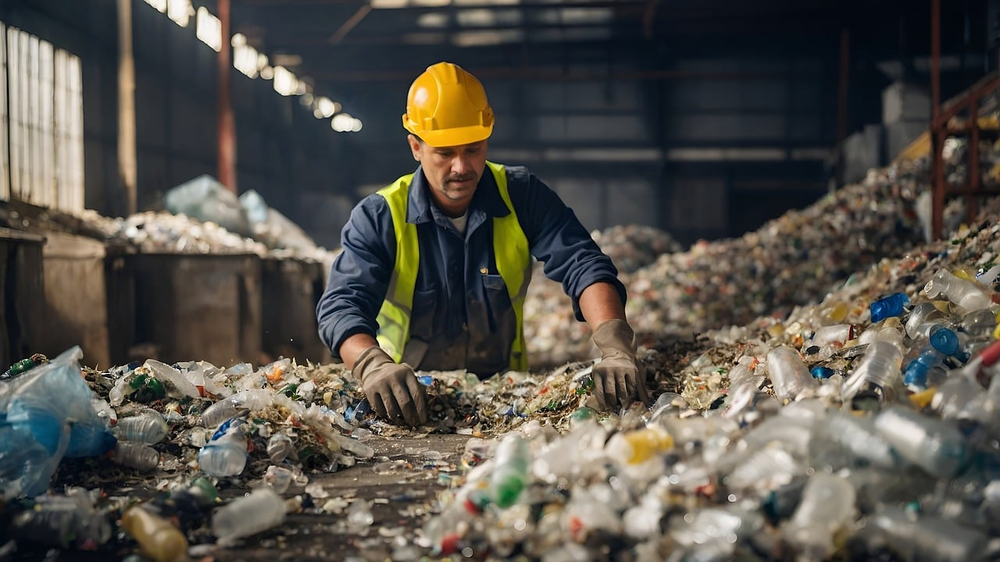

Puntos de reciclaje

¿Dónde dejo mis residuos?
Los puntos de reciclaje son un lugar designado para aglomerar materiales reciclables como papel, plástico, vidrio y metal. De esta manera facilitamos la separación y recolección de residuos para evitar que terminen en basurales comunes. Estos puntos ayudan a reducir la contaminación, promover el reciclaje y conservar recursos naturales. Así fomentamos la gestión sostenible de los desechos creando conciencia ambiental en la comunidad. Estos son los puntos de reciclaje en Rosario